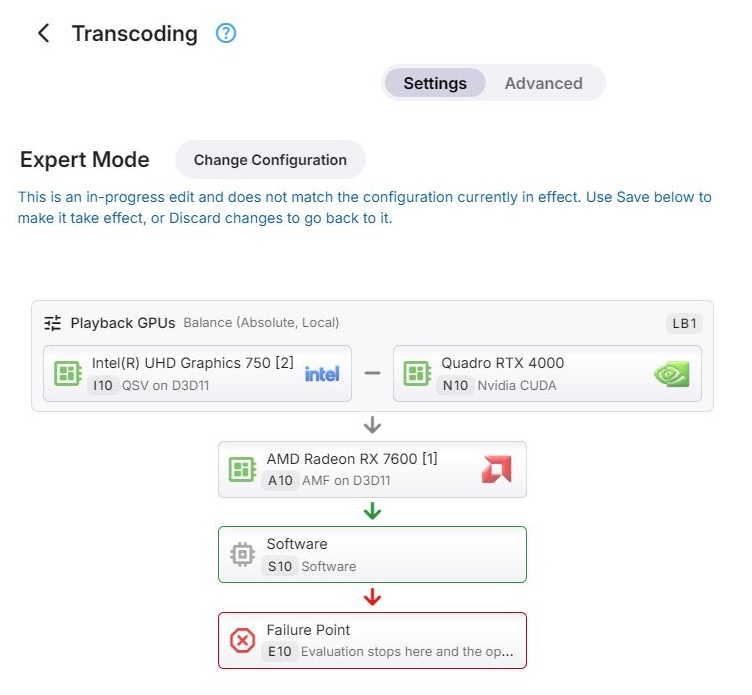

Graph Evaluation
Two Passes of Evaluation
Warning
This is crucial knowledge for understanding Expert mode Configurations
- PASS 1: GPU/SW Config Selection
- PASS 2: Fallback Paths Calculation
This practically means that the first pass determines which GPU should be used and with which configuration (or SW transcoding with a certain configuration).
The 2nd pass though, is about deciding what should happen in case when the configuration chosen by the first pass would result in an error.
Evaluation Order
Graph evaluation happens in the same order like when reading a book:
- Row after row from top to bottom
- Within each row from left to right
That order is also indicated by the arrows in the graph.
Exceptions
- Different rules apply inside a Load Balancing container - see Load Balancing
- For fallback calculation, only fallback point nodes are considered
=> These are nodes which have a green or red border and are preceded by a green or red arrow
How the second pass uses this is described in Fallback Paths.

When the Graph Is Evaluated
The graph is evaluated once for each transcoding operation, before FFmpeg is started - when a playback starts transcoding, and for each conversion. Both passes run at that time, so the fallbacks are known before the first attempt is made.
The same evaluation applies in all three modes. Basic Mode and Advanced Mode build the graph for you: the devices in order, with the software node last as the fallback point.
Nothing is evaluated when there is no video to transcode - for audio-only operations, and when the video is copied unchanged. Image extraction does not use the graph either; it has its own settings.
What Takes Part
Before evaluation starts, everything that cannot be used is taken out of the graph:
- nodes that are switched off, including everything inside a group that is switched off
- device nodes whose device is not present - including the devices of a remote host that is switched off
- groups that are left without nodes
The FFmpeg log shows both the graph as configured and the graph that was actually evaluated - see Reading the Result in the Log.
How a Node Is Judged
In the first pass, nodes are looked at in evaluation order, and the first one that applies to the operation is selected. Whether a node applies is decided as follows.
Conditions
A node whose conditions do not match is passed over - for a group, together with everything inside it. Live TV is never transcoded on a remote device.
Device Nodes
A device node - GPU Config or Software Config - applies when its device can perform the operation the way the node is configured:
- Load - only for a node directly inside a load balancing group: the node is passed over when it, or its device across the whole graph, has reached its limit.
- Subtitles - when the operation burns in subtitles and the node is set to Skip this configuration for that kind of subtitles, the node is passed over - see Subtitle Burn-In.
- Encoder - the node needs an encoder for the output codec, and that encoder has to accept the output: its resolution, bitrate, profile and level. An encoder selection of Skip passes the node over. Hardware encoders also require an active Emby Premiere subscription.
- Decoder - the node's decoder for the source codec has to be able to read the source: its resolution,
bitrate, color format, profile, level and bit depth.
- A decoder selection of Skip passes the node over.
- When the selected hardware decoder cannot read the source, When a selected hardware decoder is not suitable decides: Use software decoding keeps the node, decoding in software and still encoding on the device; Skip this configuration passes the node over.
- For source codecs the device cannot decode at all - the ones offered no decoder selection - Allow software decoding for other codecs decides whether the node is used with software decoding or passed over.
Filters - deinterlacing, scaling, tone mapping - do not decide whether a node applies. When the selected node offers no suitable filter for a processing step, a software filter is used for that step where there is one.
Condition Groups
A condition group is entered when its conditions match, and its nodes are judged in order, from left to right. When none of them applies, evaluation continues after the group. A group is never selected itself, and load limits play no part inside a condition group.
Load Balancing Groups
When its conditions match, a load balancing group selects one of its nodes according to its distribution - the first one below its limits for overflow, the one with the least load for balance; see Load Balancing. When none of its nodes applies, evaluation continues after the group.
Failure Points
A failure point whose conditions match stops evaluation. When no node has been selected before it, the operation fails.
When Nothing Applies
When evaluation reaches the end of the graph without having selected a node, the operation fails. The log says No entry of the configuration applies to this operation.
When an Attempt Fails
The selected node is tried first. When FFmpeg fails to start - it exits with an error, or the expected output does not appear, for a playback within 15 seconds - the next node from the list of fallbacks is tried, up to three of them. The log notes each change: Previous transcoding attempt failed. Falling back to configuration 'S1'.
The list is not calculated again for a retry. A transcode that has started successfully and fails later does not move on to a fallback, nor does one that was stopped. Live TV only uses the selected node.
Example: Try Another Context Before Software
Suppose you want to try Vulkan (Nvidia) for HEVC output, retry on the same GPU with Nvidia CUDA if that attempt fails to start, and use software as the last resort. The GPU must offer both contexts and a suitable HEVC encoder in each. This example assumes playback already requires HEVC output; a condition on the output codec does not change the codec that Emby has chosen.
In Expert Mode, arrange three nodes in this order, outside any container:
N1 Same GPU, Vulkan (Nvidia)
|
N2 Same GPU, Nvidia CUDA [Fallback point]
|
S1 Software [Fallback point]
The IDs are examples; use the IDs assigned to your own nodes when reading the log.
- Configure the first GPU node to use Vulkan (Nvidia). Set its condition to Output Codec Equals HEVC, and leave Fallback point off.
- Add a second node for the same GPU and configure it to use Nvidia CUDA. Leave its conditions empty and turn Fallback point on. It can then be selected either initially or as a fallback.
- Place the Software node last, leave its conditions empty and turn Fallback point on.
- Save the dialogs, then save the configuration.
For an HEVC playback operation that all three nodes can handle, the first pass selects N1. The second pass adds N2 and S1 to the fallback list, in that order. Both passes finish before FFmpeg starts. If the Vulkan attempt fails to start, Emby retries with Nvidia CUDA; if that also fails to start, it tries software.
The following is an illustrative, abbreviated log, with the GPU name shown as a placeholder and the detailed capability checks omitted:
Transcoding configuration (Expert)
Configured: N1 🠊⬩ N2 🠊⬩ S1
Effective: N1 🠊⬩ N2 🠊⬩ S1
N1 => Match
Selected: N1 <GPU name> - Vulkan (Nvidia)
Fallback configuration (Expert)
N2 => Match
S1 => Match
If the first attempt subsequently fails to start, the log records:
Previous transcoding attempt failed. Falling back to configuration 'N2'.
If the operation instead requires H.264 output, N1 reports UnmetNodeConditions. N2 can then be selected
in the first pass, with S1 as its fallback. Likewise, if N1 matches the condition but fails a capability
check, evaluation continues to N2 immediately, without starting an FFmpeg attempt on N1.
Reading the Result in the Log
The FFmpeg log of every transcode - see FFmpeg Logs - records the evaluation, between the information about the media and the FFmpeg command line. For example:
Transcoding configuration (Advanced)
Configured: N1 🠊 I1 🠊⬩ S1
Effective: N1 🠊⬩ S1
N1 => DecoderBitDepthNotSupported
…
S1 => Match
…
Selected: S1 Software - Software
Fallback configuration (Advanced)
- Configured is the graph as saved, Effective the graph that was evaluated, after taking out what cannot be used - here I1, which is switched off.
🠊leads to the node that is tried next,━━joins the nodes of a load balancing group, braces enclose the nodes of a group - for exampleCG1{N2 🠊 S2}- and⬩marks a fallback point or a failure point.- Each node that was judged gets a line with its ID and the result, followed by the details of the checks.
- Selected names the node, its device and its context type. The section after it lists the fallback candidates in the same way.
| Result | Meaning |
|---|---|
Match |
The node applies |
UnmetNodeConditions |
The node's conditions do not match |
GpuLoadAtLocalMaximum, GpuLoadAtGlobalMaximum |
The node, or its device across the graph, is at its limit |
OtherGpuHasLessLoad |
In a balancing group, another node has less load |
SubtitlesSkipped |
The node is set to skip this kind of subtitle burn-in |
NoEncoder, NoDecoder |
No encoder for the output codec, or no decoder for the source codec |
EncoderHardwareNotAllowed |
Hardware encoding requires Emby Premiere |
Encoder…, Decoder… |
The encoder or decoder cannot handle the operation - the name says which limit, for example EncoderMaxWidthExceeded or DecoderBitDepthNotSupported |